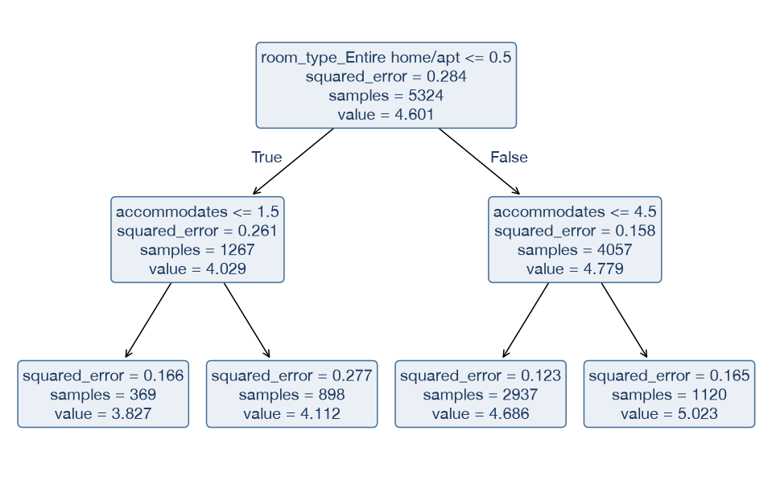
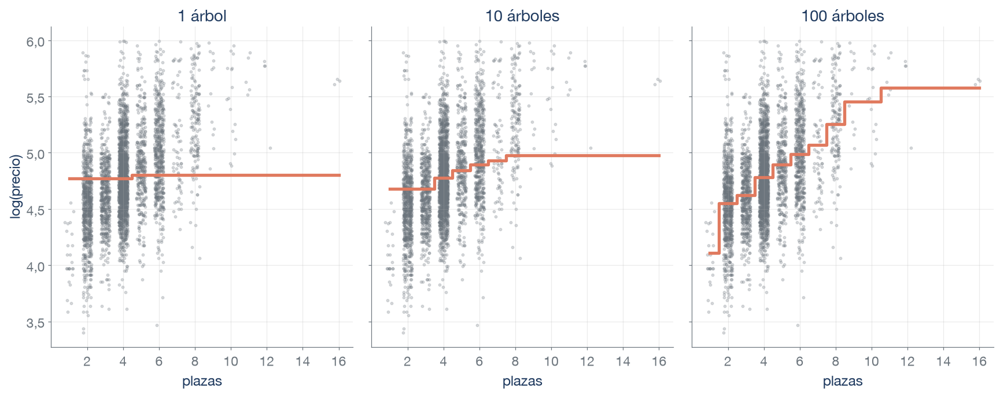
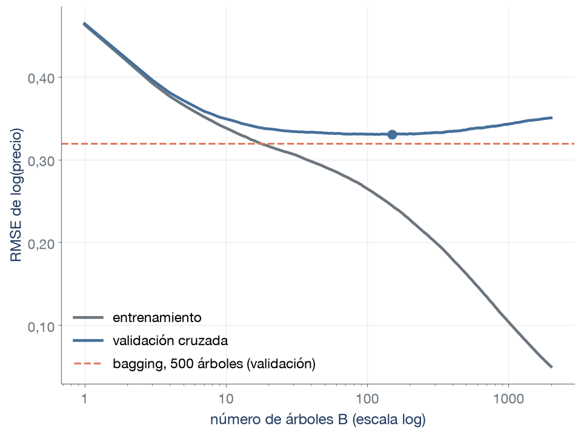
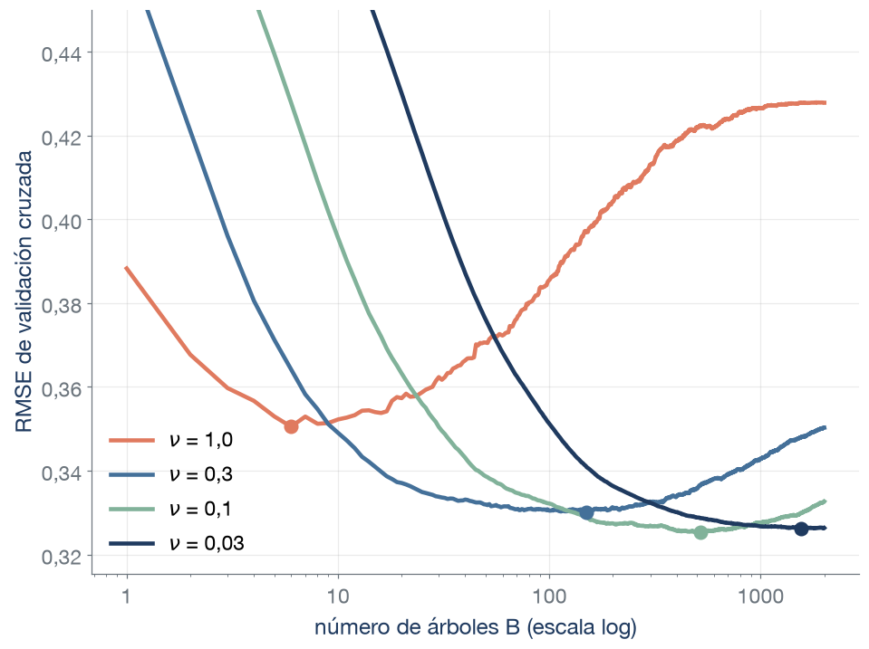
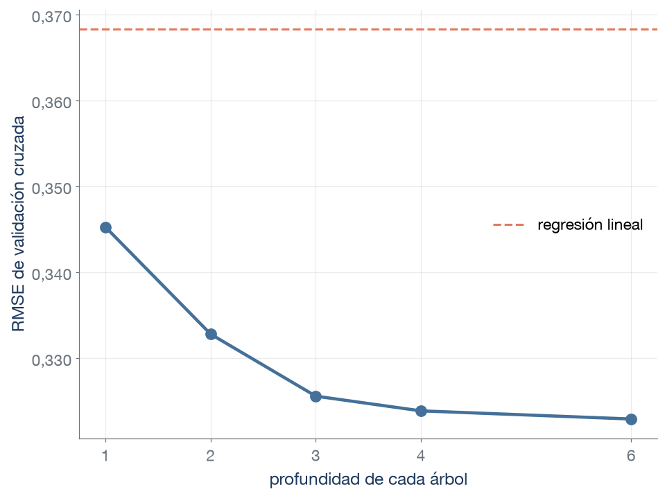
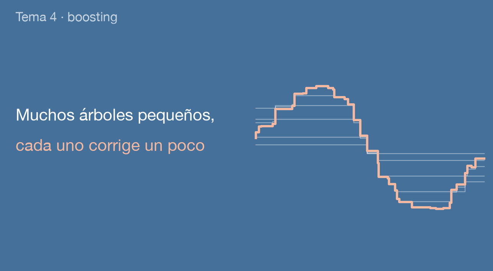

Técnicas Avanzadas de Predicción en Negocios

Fuente: Inside Airbnb, Valencia (listados.csv). Misma población y división que los temas 2 y 3, con 5324 anuncios de entrenamiento.
El gradient boosting es un método de aprendizaje secuencial que combina árboles poco profundos. Cada nuevo árbol se ajusta para corregir los errores de predicción del conjunto de árboles anterior.

Pisos enteros del conjunto de entrenamiento. Cada árbol es un único corte (un tocón) ajustado a los residuos de la suma de los anteriores, y se suma una décima parte de su predicción. Cada árbol nuevo hace el corte que más reduce la RSS de los residuos que quedan.
Cada árbol necesita los residuos del anterior, así que los árboles se ajustan uno tras otro.
Notación
En clasificación, la pérdida es la log-loss y \(f_i\) está en escala log-odds. Un anuncio es de superanfitrión (\(y_i = 1\)) y el modelo le da \(\hat p_i = 0{,}2\). ¿En qué sentido debe corregir el siguiente árbol su log-odds? ¿Qué cantidad hace aquí el papel del residuo?
Cada árbol es un árbol de regresión ajustado a \(y_i - \hat p_i\). Sus hojas suman correcciones en escala log-odds y la probabilidad es \(\hat p = 1/(1 + e^{-\hat f})\). Superanfitrión (30,5 % de los anuncios):
| Modelo | Log-loss | Exactitud |
|---|---|---|
| Clasificador nulo | 0,615 | 0,695 |
| Random forest (500 árboles) | 0,391 | 0,834 |
| Gradient boosting (100 árboles) | 0,409 | 0,818 |
Medias de las 5 particiones de validación cruzada del conjunto de entrenamiento. Métrica: la log-loss, porque el boosting ajusta probabilidades y la log-loss las evalúa directamente. La exactitud (umbral 0,5) se muestra como referencia.

¿Qué añade cada árbol nuevo a la flexibilidad del modelo? ¿Qué añadía en el bagging?
Tasa de aprendizaje \(\nu\) = 0,3, árboles de profundidad 3. Media de las 5 particiones de validación cruzada del conjunto de entrenamiento.


Un tocón (árbol de un solo corte) usa un solo predictor. ¿Qué relación entre plazas y tipo de alojamiento no puede representar un boosting de tocones?
500 árboles, \(\nu\) = 0,1. Media de las 5 particiones de validación cruzada del conjunto de entrenamiento.
Qué elige y qué deja
La parada temprana elige B en cada ajuste, sin una rejilla de valores de B. La tasa \(\nu\) y la profundidad se siguen eligiendo por validación cruzada.
GradientBoostingRegressor y GradientBoostingClassifier (sklearn.ensemble):
| Hiperparámetro | Qué controla | Efecto |
|---|---|---|
n_estimators |
Número B de árboles (máximo, con parada temprana) | Más árboles, más capacidad de ajuste: el error de validación puede subir |
learning_rate |
\(\nu\): fracción de cada árbol que se suma | \(\nu\) menor, más árboles necesarios y curva más plana |
max_depth |
Cortes seguidos de cada árbol (orden de las interacciones) | Más profundidad, interacciones de más predictores |
subsample |
Fracción de las observaciones de entrenamiento, sin reemplazamiento, que ve cada árbol | Por debajo de 1, árboles menos parecidos y ajuste más rápido |
n_iter_no_change, validation_fraction |
Parada temprana: árboles seguidos sin mejora y fracción apartada | Elige B en cada ajuste |
loss |
Pérdida cuyo gradiente siguen los árboles | squared_error en regresión, log_loss en clasificación |
Valores por defecto: n_estimators=100, learning_rate=0,1, max_depth=3 (sin parada temprana).
Dos hojas tienen la misma media de residuos, +0,5: una con 5 observaciones y otra con 500. ¿De cuál os fiaríais menos para predecir observaciones nuevas? ¿Por qué?
La pérdida de XGBoost (caso cuadrático)
\[\sum_{i=1}^{n} \big(y_i - \hat f(x_i)\big)^2 + \sum_{b=1}^{B} \Omega(T_b), \qquad \Omega(T) = \gamma\,J + \lambda \sum_{j=1}^{J} w_j^2\]
| Implementación | Qué cambia | Clase (regresión) | Segundos por ajuste |
|---|---|---|---|
| AdaBoost | Repondera las observaciones con más error en cada ronda | AdaBoostRegressor |
3,06* |
| Gradient boosting | Árboles sobre los residuos (gradiente de la pérdida) | GradientBoostingRegressor |
2,95 |
| HistGradientBoosting | Agrupa cada predictor en un máximo de 255 intervalos antes de buscar los cortes, y admite valores ausentes | HistGradientBoostingRegressor |
0,61 |
| XGBoost | Penalización \(\Omega\) en cortes y hojas, cortes por intervalos, valores ausentes y sorteo de columnas por árbol | XGBRegressor (xgboost) |
0,13 |
| LightGBM | Intervalos como HistGradientBoosting, y cada árbol crece por la hoja que más reduce la pérdida | LGBMRegressor (lightgbm) |
0,08 |
XGBRegressor y XGBClassifier (xgboost, con la interfaz de scikit-learn):
| Hiperparámetro | Qué controla | Efecto |
|---|---|---|
n_estimators, learning_rate |
B y \(\nu\), como en el gradient boosting | \(\nu\) menor, más árboles necesarios |
max_depth |
Profundidad de cada árbol | Más profundidad, interacciones de más predictores |
reg_lambda |
\(\lambda\): penalización de los valores de las hojas | Más \(\lambda\), hojas más cercanas a cero |
gamma |
\(\gamma\): ganancia mínima para dividir una hoja, tras considerar la penalización \(\lambda\) | Más \(\gamma\), menos cortes |
subsample, colsample_bytree |
Fracción de las observaciones de entrenamiento y de los predictores que ve cada árbol | Por debajo de 1, árboles menos parecidos |
scale_pos_weight (solo Classifier) |
Peso de la clase positiva en la pérdida | Cambia los cortes y las probabilidades |
Valores por defecto: n_estimators=100, learning_rate=0,3, max_depth=6, reg_lambda=1, gamma=0.
El modelo se reentrenará cada semana con los anuncios nuevos, así que el tiempo de ajuste importa. Esta validación divide al azar los anuncios actuales. En parejas (3 min): ¿qué modelo propondríais y con qué argumento?
| Modelo | Hiperparámetros elegidos | RMSE | Error típico | Segundos por ajuste |
|---|---|---|---|---|
| Modelo nulo (media de log(precio)) | ninguno | 0,533 | 0,005 | 0,00 |
| Regresión lineal | ninguno | 0,368 | 0,004 | 0,01 |
| Árbol podado | \(\alpha\) = 0,0006 (24 hojas) | 0,366 | 0,004 | 0,06 |
| Random forest | 500 árboles, max_features = 0,33 |
0,314 | 0,003 | 3,12 |
| Gradient boosting | \(\nu\) = 0,05, profundidad 4, 500 árboles | 0,322 | 0,005 | 3,81 |
| HistGradientBoosting | \(\nu\) = 0,05, 31 hojas, 500 árboles | 0,317 | 0,004 | 1,13 |
| XGBoost | \(\nu\) = 0,02, profundidad 6, 2000 árboles | 0,314 | 0,004 | 0,92 |
| LightGBM | \(\nu\) = 0,02, 31 hojas, 2000 árboles | 0,318 | 0,004 | 0,73 |
RMSE de validación cruzada de log(precio): errores relativos, con más peso a los grandes. Los hiperparámetros de cada modelo se eligieron con las mismas particiones.
max_features, y de XGBoost, \(\nu\), la profundidad y el número de árboles.
| Concepto | Significado | scikit-learn |
|---|---|---|
| Boosting | Modelo que suma árboles ajustados uno tras otro, cada uno a los residuos de la suma de los anteriores | GradientBoostingRegressor |
| Residuo | \(y_i - \hat f(x_i)\): lo que le falta a la predicción actual de cada observación | — |
| Gradient boosting | Boosting en el que cada árbol aproxima el gradiente de la pérdida con el signo cambiado (en regresión cuadrática, el residuo, y en clasificación, \(y_i - \hat p_i\)) | loss |
| Tasa de aprendizaje \(\nu\) | Fracción de la predicción de cada árbol que se suma al modelo | learning_rate |
| Tocón | Árbol de un solo corte (profundidad 1) | max_depth=1 |
| Orden de las interacciones | Número de predictores distintos que se combinan en un mismo término de la suma. Lo fija la profundidad de cada árbol | max_depth |
| AdaBoost | Boosting que en cada ronda da más peso a las observaciones con más error | AdaBoostRegressor |
| Concepto | Significado | scikit-learn / xgboost |
|---|---|---|
| Parada temprana | Detener el ajuste cuando el error en un conjunto de validación interno deja de mejorar | n_iter_no_change |
| Boosting estocástico | Ajustar cada árbol con una fracción de las observaciones, elegida al azar sin reemplazamiento | subsample |
| Penalización \(\Omega\) | \(\gamma J + \lambda\sum_j w_j^2\): coste de las hojas de cada árbol y de sus valores, en la escala de la biblioteca | gamma, reg_lambda |
| Intervalos (histograma) | Agrupar cada predictor en intervalos antes de buscar los cortes, para ajustar más rápido | HistGradientBoostingRegressor |
| XGBoost, LightGBM | Bibliotecas de gradient boosting con penalización, intervalos y crecimiento por hojas | XGBRegressor, LGBMRegressor |
